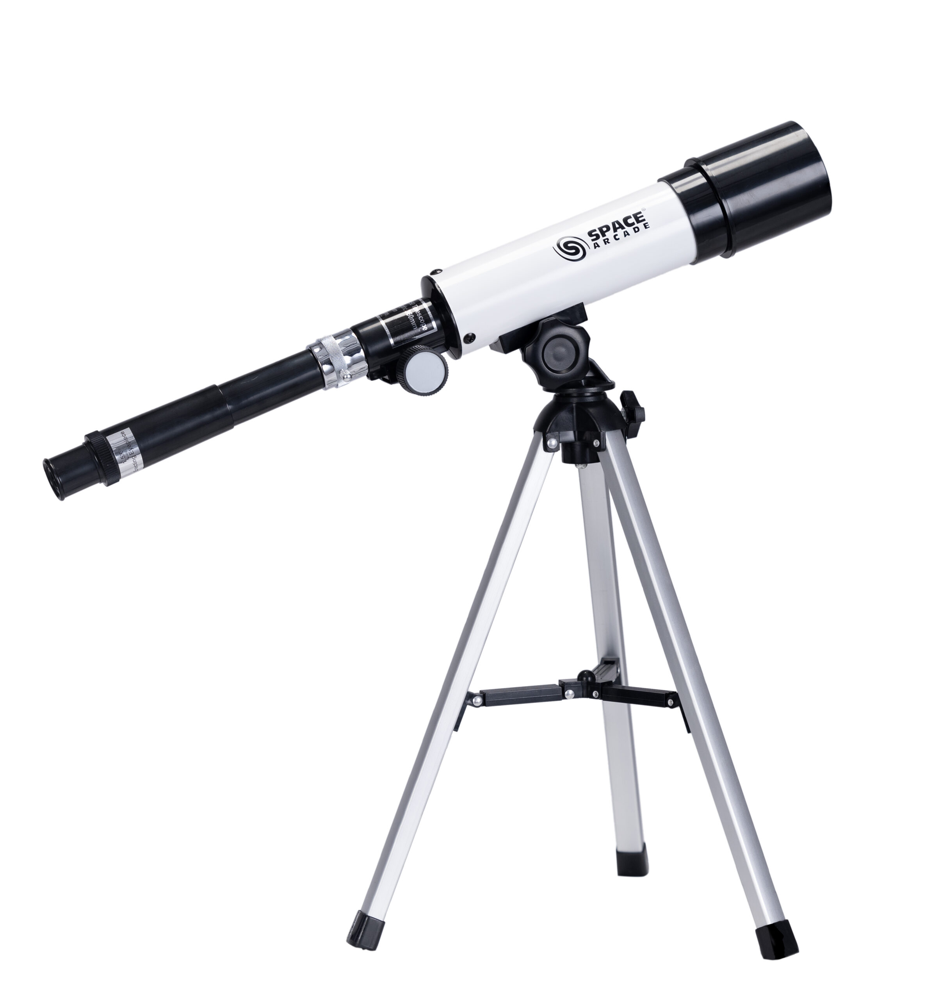
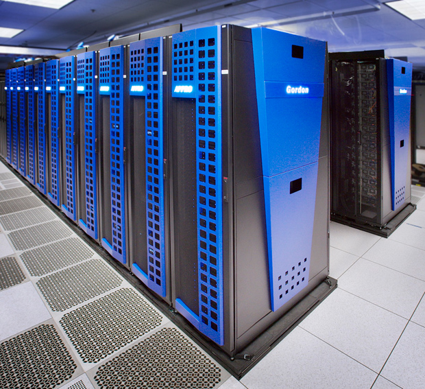

Astrophysics is a topic that incorporates both astrology and physics,studying about celestial bodies using physics technologies help astrophysicists analyize info and simulate experiments.This requires advanced math skills and information on celestial bodies(Black holes, planets, stars and etc), there are many hardwares and softwares in this field, whether being telescope, sensors,supercomputers or softwares help simulate blackholes and other situtations for data testing.
A app about star gazing,finds events such as solar eclipse,lunar phases, planetary occultations and etc. (Mobile App,Phone)
Helps run simulated experiments,great for collecting data for astrophysics students,great educational app/simulation,runs on any hardware, simulation/app website
Good for astrophysics analyis,good for experimental simulation,runs on any hardware, simulation/app website
Software that helps users stargaze, it's like a binoculars or a telescope but with the naked eye Requires a computer,Minimal:Windows 7 and above; macOS 10.13 and above,in general a great software for astrophysics
Telescopes help us observe objects in space, there are different telescopes such as X-ray and Gamma ray telescopes, these telescopes are different Because Earth's atmosphere blocks these high-energy wavelengths, these telescopes are launched into space. The Chandra X-ray Observatory is a prime example,helping us to learn about more these rays.

Supercomputers, this serves as a data stroage and can help simulate complex simulations to test certain tests,this can help store and analyze/organize data collected during simulations and experiments, and can process and handle things that are extremely large in size(millions in term of gigabytes)

A upgraded supercomputer meant for advanced simulation and data analysis,and it's less energy consuming compared to a standard supercomputer
A upgraded telescope that allows one telescope to have the functions of 3, being able to change it's objective lens, changing from seeing gamma rays to Radio wave to Infrared light and finally normal sight seeing in the night sky
A upgraded sensor that allows for deep-space searching, which can help find and discover other extraordinary findings